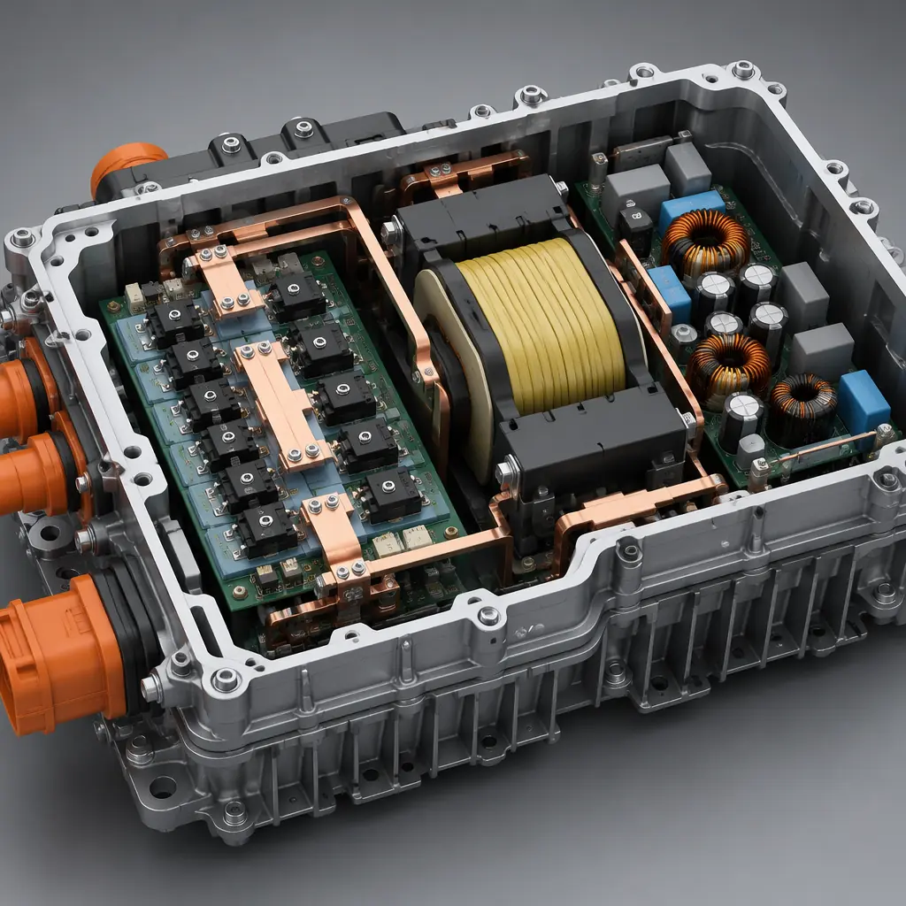
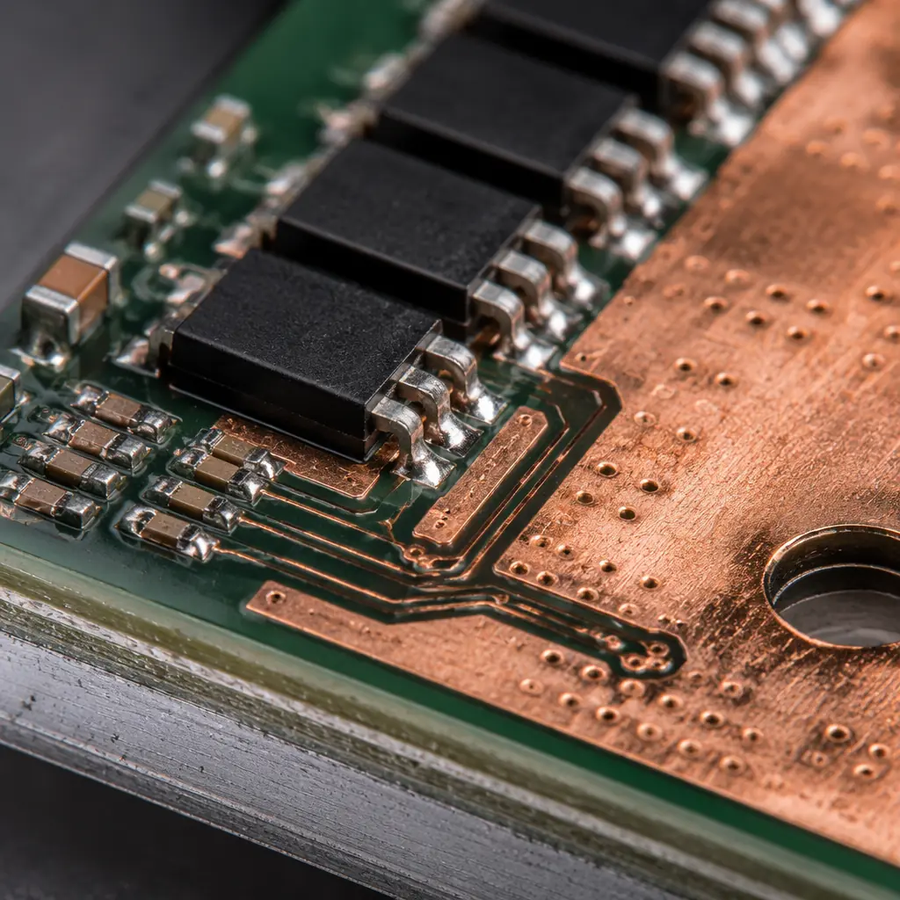

Every electric vehicle on the road carries two power conversion modules that most drivers never think about: the on-board charger (OBC) that converts AC grid power to high-voltage DC for the traction battery, and the DC-DC converter that steps down 400-800V from the high-voltage bus to 12V for the vehicle's low-voltage systems. Together, these modules process 3.3-22 kW of power continuously, switching at frequencies from 50 kHz to 500 kHz, inside an aluminum housing that sees under-hood temperatures from -40°C to +105°C. The PCB inside these modules is the difference between a power converter that delivers its rated efficiency for 150,000 miles and one that fails at 30,000 miles from delamination under thermal cycling.
Huaxing PCBA manufactures automotive power PCBs under IATF 16949 certified quality management, with capabilities spanning 6 oz heavy copper, high-Tg laminate (Tg ≥ 170°C), and 8-layer metal-core constructions for power modules. Our facility processes 8 million solder joints per day across 8 SMT lines and supports the full automotive qualification chain from PPAP Level 3 submission through production ramp. This guide covers the PCB design and manufacturing decisions that determine whether your OBC and DC-DC converter designs make it from prototype to volume production on schedule.

On-Board Charger PCB: AC-DC Power Stage Design for 800V Systems
The on-board charger converts single-phase or three-phase AC mains (110-240V or 400V AC) to the traction battery's DC voltage — increasingly 800V in next-generation EV platforms. A bidirectional OBC (capable of vehicle-to-grid or V2G operation) uses a two-stage architecture: an AC-DC PFC (Power Factor Correction) front end followed by an isolated DC-DC converter using a resonant LLC or CLLC topology. The PCB must handle the full power path with efficiency above 95% to minimize thermal management burden.
SiC MOSFET Power Stage: 1200V Devices on 800V Bus
Modern OBC designs use silicon carbide (SiC) MOSFETs rated at 1200V to handle the 800V bus with adequate voltage margin. SiC devices switch at 10-20 V/ns — 5-10× faster than silicon IGBTs — which reduces switching losses but demands extremely low-inductance gate drive and power loop layouts. The commutation loop inductance between the DC-link capacitor, high-side SiC MOSFET, low-side SiC MOSFET, and return path must stay below 5 nH to avoid voltage overshoot that can exceed the device rating. Achieving this requires placing the DC-link capacitor within 10 mm of the half-bridge and using a laminated busbar or 4-layer PCB with power and return on adjacent layers separated by only 0.2 mm of prepreg.
High-Voltage Isolation: 800V Bus to Chassis Ground
The PCB must provide reinforced isolation between the high-voltage traction bus and the low-voltage control circuits and chassis ground. IEC 60664-1 requires 8 mm creepage distance for reinforced isolation at 800V with Pollution Degree 2 and Material Group IIIa (standard FR-4). This is the minimum spacing between any HV trace and any LV trace, connector pin, or mounting hole connected to chassis. For compact OBC designs where 8 mm creepage is impractical, conformal coating can reduce the required creepage to 4 mm (Pollution Degree 1 equivalent). See our high-voltage PCB design guide for the complete creepage and clearance calculation methodology, and our conformal coating guide for coating selection and application requirements.
Planar Transformer PCB: Integrating Magnetics into the Board
The isolated DC-DC stage in a modern OBC often uses a planar transformer — where the primary and secondary windings are implemented as copper traces on the PCB itself, with a ferrite core clamped through cutouts in the board. A 6.6 kW LLC converter at 200-300 kHz typically uses an 8-10 layer planar transformer section with 4 oz copper on the winding layers. The inter-winding capacitance between primary and secondary must be minimized to reduce common-mode EMI — this is achieved by increasing the separation between primary and secondary winding layers (using thicker prepreg) and avoiding overlapping copper areas between primary and secondary on adjacent layers. A properly designed planar transformer PCB can achieve 98-99% transformer efficiency with 50% lower profile than a conventional wire-wound transformer.
Procurement Reality: Planar transformer PCBs with 4 oz copper and 8+ layers require a supplier with proven heavy copper lamination capability. The lamination cycle for a 4 oz multilayer board takes 2-3× longer than standard 1 oz copper and requires vacuum lamination presses with precise temperature profiling to ensure complete resin fill between thick copper features. Suppliers who quote heavy copper multilayer at the same lead time as standard boards are likely skipping steps — the result is resin-starved areas that fail during the first thermal shock test.

DC-DC Converter PCB: 400V-to-12V Step-Down for Vehicle Low-Voltage Systems
The DC-DC converter replaces the alternator in an EV — it supplies 1-3 kW at 12V (or 48V in some architectures) to power everything from the infotainment system and headlights to the ABS controller and ADAS computers. While the OBC operates only during charging, the DC-DC converter runs continuously whenever the vehicle is in drive mode, accumulating 5,000-10,000 hours of operation per year in commercial fleet vehicles.
Synchronous Rectification: Sub-Milliohm RDS(on) Requires Kelvin Sensing
To achieve >96% efficiency in a 400V-to-12V converter, the output synchronous rectifier MOSFETs must use devices with RDS(on) below 1 mΩ. At 250A load current, even 1 mΩ of parasitic resistance in the PCB trace between the MOSFET source and the output connector creates 62.5W of wasted heat. The PCB layout must implement Kelvin (4-wire) sensing connections to the output terminals — a dedicated sense trace pair that measures the output voltage at the connector, not at the converter PCB, to compensate for IR drop in the output cables. Placing the sense point on the wrong side of a connector interface can introduce 50-100 mV of load regulation error — enough to trigger under-voltage faults in downstream ECUs during load transients.
Output Filtering: LC Filter Design for Automotive EMI Compliance
Automotive DC-DC converters must meet CISPR 25 Class 3 conducted and radiated EMI limits — significantly more stringent than industrial or commercial standards. The output LC filter on the 12V rail typically uses a multi-stage design: a first stage at the switching frequency with 1-10 μH inductance and 100-470 μF capacitance, followed by a second stage for high-frequency attenuation. The filter inductor's core material must avoid saturation at the maximum DC bias current (typically 200-300A for a 3 kW converter). Ferrite core materials with distributed air gaps (e.g., Kool Mμ or Sendust) provide better DC bias performance than gapped ferrite but cost 2-3× more. For EMC design strategies across the full vehicle platform, see our PCB EMC and EMI compliance guide.
Metal-Core PCB for Single-Package Thermal Solution
Many DC-DC converter designs use a metal-core PCB (MCPCB) — typically 1.5-3.0 mm aluminum substrate — to conduct heat from the power semiconductors directly to the converter housing without requiring a separate heatsink. The dielectric layer between the copper circuit layer and the aluminum base must have thermal conductivity of at least 2.0 W/m·K (compared to 0.3 W/m·K for standard FR-4) and withstand 2.5 kV AC hipot testing for 800V bus applications. Our metal-core PCB manufacturing guide covers the design rules for aluminum and copper-core substrates, including the trade-off between thermal performance and single-layer routing constraints.
Automotive Reliability: What Separates Production PCBs from Prototype Failures
An OBC or DC-DC converter PCB that passes room-temperature functional test on the bench is not production-ready. The following automotive-specific failure modes account for the majority of field returns in power conversion modules:
| Failure Mode | Root Cause | Prevention |
|---|---|---|
| CAF (Conductive Anodic Filament) | Ionic contamination + moisture + DC voltage bias between adjacent plated features | ROSE testing <1.56 μg/cm² NaCl per IPC-6012, high-Tg laminate, ≥0.4 mm hole-to-hole spacing under voltage bias |
| Barrel cracking in PTH vias | CTE mismatch between copper (17 ppm/°C) and FR-4 (50-70 ppm/°C z-axis) during thermal cycling | Minimum 25 μm copper plating in via barrel, high-Tg laminate (Tg ≥ 170°C) to reduce z-axis expansion |
| Inner layer delamination | Incomplete resin cure or moisture absorbed in prepreg before lamination | Vacuum lamination with documented temperature profile, post-lamination TMA (Tg verification on production panels) |
| Solder joint fatigue under power cycling | CTE mismatch between component and PCB, exacerbated by repeated 100°C+ ΔT cycles | Underfill for large BGA packages, IMS (Insulated Metal Substrate) for power devices, derate component Tj max by 25°C |
| Surface tracking / carbonization | Dust + humidity + high voltage between adjacent traces creates conductive carbon path | Conformal coating (acrylic or silicone, ≥50 μm), CTI ≥ 600V laminate material |
For the full automotive qualification framework — including thermal cycling profiles, IST (Interconnect Stress Testing) requirements, and PPAP documentation — read our automotive PCB requirements guide. For EV-specific power electronics design, our EV BMS PCB design guide covers the battery management side of the high-voltage system.
PCB Manufacturing for EV Power Modules: Process Decisions That Impact Yield
EV power module PCBs push the limits of standard PCB manufacturing — combining features that individually are routine but together create yield challenges. Procurement managers should understand which design decisions drive manufacturing complexity and cost.
Copper Thickness Transitions on the Same Layer
An OBC PCB often has 4 oz copper on the power path and 1 oz copper on the control section of the same layer. This requires a "step-down" etching process that adds 15-20% to the PCB fabrication cost and requires the supplier to have dedicated etching equipment calibrated for thick copper. The transition zone between 4 oz and 1 oz copper must include a gradual taper — abrupt thickness transitions create stress concentration points during thermal cycling. For copper weight selection across different circuit sections, consult our PCB copper weight selection guide.
High-Tg Laminate Inventory Management
High-Tg FR-4 (Tg ≥ 170°C) and polyimide laminates have limited shelf lives — typically 6 months from date of manufacture for polyimide under controlled storage (23°C, 50% RH). A supplier who buys laminate per-order from distributors adds 4-8 weeks to lead time and risks receiving material near the end of its shelf life. Suppliers serving the automotive power electronics market should maintain strategic inventory of common high-Tg laminates (Isola IS410, ITEQ IT-180A, Shengyi S1000-2) with documented lot traceability. For a comprehensive laminate comparison across all material families, see our PCB laminate selection guide.
Press-Fit Pin Technology for Connectorless Power Interfaces
Many EV power modules use press-fit pins instead of soldered connectors for the high-current interfaces — press-fit eliminates solder joint fatigue under thermal cycling and provides lower contact resistance. The PCB plated through-holes for press-fit pins require finished hole diameter tolerance of ±0.05 mm and copper plating thickness of 25-50 μm to maintain consistent insertion and retention force across production volumes. Our PCB press-fit technology guide covers the design rules and process validation requirements for solderless interconnection.
100% Electrical Test: 4-Wire Kelvin for Power Traces
Standard flying probe or bed-of-nails electrical test uses 2-wire measurements that include probe contact resistance (50-200 mΩ) in the measurement. For power traces where the design resistance may be as low as 2-5 mΩ, 2-wire testing cannot reliably detect trace narrowing or partial opens. EV power module PCBs should specify 4-wire Kelvin testing on all traces carrying >10A — the cost adder is approximately 5-8% of the PCB price and detects defects that 2-wire testing would miss until the board fails under load during functional test.
Cost Drivers in EV Power Module PCBs: What Procurement Teams Control
OBC and DC-DC converter PCBs typically cost 3-8× more per square centimeter than standard automotive PCBs due to heavy copper, high-Tg laminate, and specialized testing. Understanding the cost drivers helps procurement teams make informed trade-offs:
| Cost Driver | Impact on PCB Unit Cost | Optimization Strategy |
|---|---|---|
| Heavy copper (4-6 oz vs 1 oz) | +50-100% | Limit heavy copper to power path layers only; use 1-2 oz on control layers |
| High-Tg laminate (Tg ≥ 170°C) | +20-40% vs standard FR-4 | Standardize on one laminate across all EV power modules to aggregate volume |
| Metal-core substrate (MCPCB) | +80-150% vs FR-4 | Use only when thermal analysis confirms FR-4 with thermal vias is insufficient |
| 4-wire Kelvin test | +5-8% | Apply only to traces carrying >10A; standard 2-wire test on control sections |
| Conformal coating | +10-20% | Specify selective coating (power section only) rather than full-board coating |
For strategies to optimize overall PCB procurement cost without sacrificing quality, including volume aggregation and supplier consolidation, refer to our PCB cost factors guide and panelization cost optimization guide.
Volume Planning Insight: EV power module programs typically follow a steep ramp: 50-200 units for DV (Design Validation), 500-2,000 for PV (Production Validation), then 10,000-50,000 annually for SOP. The NRE cost for tooling, test fixtures, and PPAP submission is amortized over the first year of production — engaging the production supplier during the DV phase (not just PV) eliminates the cost and schedule penalty of re-qualifying tooling when transitioning from a prototype supplier to a production supplier. For sourcing strategy across different volume phases, see our PCB dual sourcing strategy guide.
Starting Your EV Power Module PCB Project
The PCB inside an EV on-board charger or DC-DC converter is the foundation on which silicon carbide efficiency gains and automotive reliability requirements either succeed or fail. A 1200V SiC MOSFET can switch in 20 nanoseconds — but only if the gate drive loop inductance on the PCB is below 5 nH. A planar transformer can achieve 99% efficiency — but only if the 4 oz copper winding layers are laminated with complete resin fill and zero voids. These are not simulation problems; they are manufacturing execution problems that separate production-ready designs from qualification failures.
At Huaxing PCBA, we manufacture automotive power PCBs under IATF 16949 certified quality management, with in-house heavy copper capability up to 6 oz, high-Tg laminate inventory (Isola, ITEQ, Shengyi), and 4-wire Kelvin electrical test capability. Our engineering team has supported PPAP Level 3 submissions for Tier-1 EV power electronics suppliers. Read our automotive PCB requirements guide for the full qualification framework, or submit your Gerber files and stackup for a same-day feasibility review with DFM analysis.